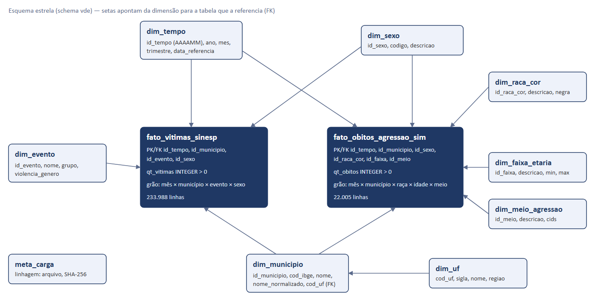
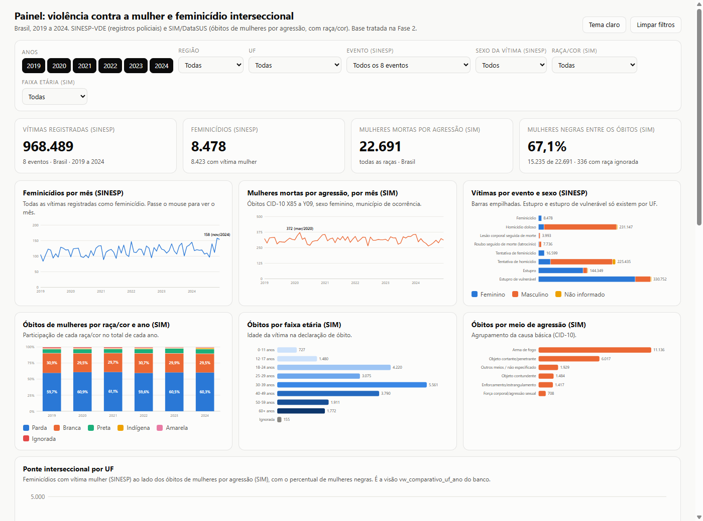

A Fase 1 escolheu o tema e as fontes. Esta fase transformou isso em uma base de dados de verdade. Baixamos seis planilhas do Ministério da Justiça e seis arquivos anuais de óbitos do DataSUS, algo em torno de 2,6 GB. Filtramos o que interessa, corrigimos os problemas que encontramos, juntamos tudo em um modelo estrela e carregamos no PostgreSQL do Aiven. O resultado cabe em 26 MB e responde, por município e mês, quantas mulheres foram vítimas de cada crime e, para os óbitos, qual era a raça/cor, a idade e o meio da agressão.
A SINESP sabe o gênero da vítima mas não a raça. O SIM sabe a raça mas não o tipo de crime. Nenhuma delas responde sozinha à pergunta interseccional.
Mês, município e sexo existem nas duas. Com essas três chaves conformadas, as fontes ficam lado a lado sem misturar os números.
Cada linha descartada foi contada. Cada arquivo original tem seu SHA-256 guardado dentro do próprio banco. Quem quiser pode refazer tudo com três comandos.
Schema vde no Aiven, um painel HTML que filtra os dados sem servidor, o repositório com testes e este relatório.
O pipeline baixa tudo sozinho dos links oficiais. Isso deu mais trabalho do que parece: o portal antigo do Ministério da Justiça saiu do ar no meio do projeto e os arquivos do SIM mudaram de endereço e de formato de um ano para o outro. Os links atuais estão fixados em etl/config.py.
| Fonte | O que traz | Formato | Tamanho e detalhes |
|---|---|---|---|
| SINESP-VDE Ministério da Justiça | Vítimas por UF, município, mês e tipo de evento, com quebra por sexo. É o registro policial. | Um XLSX por ano, cerca de 765 mil linhas cada | 24 MB por arquivo. 31 indicadores, dos quais só 8 interessam ao tema. |
| SIM DataSUS / OpenDataSUS | Uma linha por Declaração de Óbito, com causa básica (CID-10), sexo, raça/cor, idade e município de ocorrência. | CSV com ponto e vírgula (2019 e 2020) e CSV dentro de ZIP (2021 a 2024) | De 44 MB a 633 MB por ano, 1,3 a 1,8 milhão de óbitos. 2022 e 2023 vieram sem cabeçalho; 2024 é preliminar (DO24OPEN). |
| IBGE Localidades | Código e nome dos 5.571 municípios. | JSON pela API REST | 2,4 MB. É a ponte entre o nome do município (SINESP) e o código (SIM). |
Antes de tocar em qualquer arquivo, o pipeline calcula o SHA-256 dele e grava em data/raw/manifest.json. Na carga, esse hash vai para a tabela meta_carga, junto com o nome, o tamanho, quantas linhas foram lidas e quantas sobraram após o filtro. Se o Ministério republicar um arquivo, dá para saber. Os brutos ficam fora do git por causa do tamanho; o manifesto fica dentro.
| Fonte | Arquivo | Tamanho | Linhas lidas | Após filtro | SHA-256 (início) |
|---|---|---|---|---|---|
| SINESP | BancoVDE 2019.xlsx … 2024.xlsx (6 arquivos) | 24,2 a 24,4 MB | 764.700 a 764.820 | 406.086 a 406.191 | 01d5cefb… a 87deaea4… |
| SIM | Mortalidade_Geral_2019.csv | 459,9 MB | 1.349.801 | 3.728 | 05acd2eea502 |
| SIM | Mortalidade_Geral_2020.csv | 531,9 MB | 1.556.824 | 3.822 | 2fdd9fcc8924 |
| SIM | Mortalidade_Geral_2021_csv.zip | 106,7 MB | 1.832.649 | 3.844 | 6a8fe8077cf1 |
| SIM | Mortalidade_Geral_2022_csv.zip | 86,9 MB | 1.544.266 | 3.788 | 10b37a98b9c2 |
| SIM | Mortalidade_Geral_2023_csv.zip | 86,9 MB | 1.465.610 | 3.887 | 9a14ef4355b7 |
| SIM | DO24OPEN_csv.zip (preliminar) | 98,1 MB | 1.532.015 | 3.622 | 13db250c9090 |
| IBGE | municipios.json | 2,4 MB | 5.571 | 5.571 | 77bf68d9f5b1 |
A lista completa, com os hashes inteiros, está em docs/relatorio_tratamento.md e na tabela vde.meta_carga.
Escolhemos Python com pandas porque uma única biblioteca lê XLSX, CSV e JSON, e porque o SIM é grande demais para abrir inteiro na memória: cada ano tem mais de 1,3 milhão de linhas e 80 colunas. A leitura em blocos de 200 mil linhas resolve isso. Cada bloco é filtrado e agregado antes do próximo entrar.
Baixa as três fontes, extrai os ZIPs do SIM, coloca cabeçalho nos arquivos de 2022 e 2023 e grava o manifesto com o SHA-256 de cada um. Os arquivos oficiais nunca são alterados.
Aplica as regras das próximas páginas. Cada passo conta quantas linhas entraram e quantas saíram, e esse rastro vira o relatório de tratamento.
Recria o schema, carrega as 11 tabelas com COPY (o jeito mais rápido do PostgreSQL) e cria as visões analíticas. Tudo em uma transação: se algo falha, o banco volta ao que era.
| SINESP-VDE | Linhas |
|---|---|
| Lidas nos 6 arquivos | 4.588.376 |
| Após manter só os 8 eventos do tema | 2.436.806 |
| Repetidas no mesmo arquivo (mantidas, ver DF) | 13.743 |
| Nomes de município sem par no IBGE | 0 |
| Linhas no fato (mês × município × evento × sexo) | 233.988 |
| Vítimas somadas (conferência) | 968.489 |
| SIM/DataSUS | Linhas |
|---|---|
| Declarações de óbito lidas | 9.281.165 |
| Após filtro de agressão (X85 a Y09) e sexo feminino | 22.691 |
| Com data de óbito inválida | 0 |
| Código de município sem par (vai para "não informado" da UF) | 1 |
| Linhas no fato (mês × município × raça × idade × meio) | 22.005 |
| Óbitos somados (conferência) | 22.691 |
Um detalhe de ambiente que vale registrar: o Windows desta máquina bloqueou, via Smart App Control, o Python do ambiente virtual e as DLLs do numpy e do pandas. A solução foi fixar as versões em requirements.txt e rodar com o interpretador do uv apontando para os pacotes do .venv. O script scripts/finalizar_entrega.ps1 já faz isso.
| # | O que encontramos | O que decidimos | Por quê |
|---|---|---|---|
| 1 | Nomes de coluna mudam de um ano para o outro. | Normalizar (minúsculas, sem acento, com sublinhado) e validar as 7 colunas obrigatórias. | O pipeline não quebra com layout novo e falha cedo se faltar campo essencial. |
| 2 | A data vem como data, como texto "MM/AAAA" ou separada em ano e mês. | Converter tudo para DATE no dia 01. | Grão mensal único, igual ao do SIM. |
| 3 | 31 indicadores, a maioria fora do tema (apreensão de drogas, roubo de carga…). | Manter 8 eventos de violência contra a pessoa. A comparação ignora acento e caixa. | Foco no tema e metade do volume. |
| 4 | Contagens como texto com separador de milhar ("1.050"). | Função inteiro_br(): tira o ponto, troca a vírgula, converte para inteiro. | Sem isso, "1.050" vira 1,05. |
| 5 | Linhas com total de vítimas maior que zero e sexo em branco. | Total vai para "Não informado". | Não perde vítima e não inventa sexo. No dado real: 0 casos. |
| 6 | Soma por sexo diferente do total informado. | Manter a quebra por sexo e contar as ocorrências. | Gênero é o eixo da análise. No dado real: 0 casos. |
| 7 | Linhas repetidas. O DF lança uma linha por Região Administrativa, todas como "BRASÍLIA", sem coluna que diferencie. | Remover só a mesma linha repetida em outro arquivo. Repetições no mesmo arquivo são mantidas e somadas. | A primeira versão removia tudo e apagava 60% das vítimas do DF (feminicídios de 2019: 32 no bruto, 13 depois). Fora do DF, as repetições têm zero vítimas. |
| 8 | Município identificado só pelo nome. | Casar com o IBGE por nome normalizado, mais uma tabela de 11 apelidos (Embu → Embu das Artes, Açu → Assu…). | Gera o código IBGE, que é a chave para cruzar com o SIM. |
| 9 | Nome sem par no IBGE ou "não informado". | Vai para a linha "NÃO INFORMADO" da UF e aparece no relatório. | Preserva o total estadual; a lista orienta novos apelidos. |
| 10 | Colunas agente, arma, faixa etária e peso. | Descartadas. | Detalham outros indicadores. Nas linhas do nosso escopo estão todas vazias, e o relatório prova isso. |
| 11 | Formato largo: uma coluna para feminino, outra para masculino, outra para não informado. | Despivotar para uma linha por sexo. | Sexo vira dimensão, igual no SIM, e as duas fontes ficam comparáveis. |
| # | O que encontramos | O que decidimos | Por quê |
|---|---|---|---|
| 1 | Cerca de 1,5 milhão de linhas por ano, mais de 80 colunas. | Ler só 6 colunas, em blocos de 200 mil linhas, agregando cada bloco antes do próximo. | Memória constante. O arquivo de 633 MB nunca fica inteiro na RAM. |
| 2 | Todas as causas de morte. | Filtrar CAUSABAS entre X85 e Y09 (agressões) por expressão regular, e SEXO feminino ("2" ou "F"). | É o recorte da Fase 1. A regex rejeita códigos truncados como "X9". |
| 3 | Data de óbito como DDMMAAAA e às vezes sem o zero à esquerda ("1032019"). | Ler como texto, completar com zeros e converter. | Sem isso, todo óbito de dia 1 a 9 vira data inválida. |
| 4 | Idade codificada: o primeiro dígito diz a unidade (0 minutos, 1 horas, 2 dias, 3 meses, 4 anos, 5 = 100+). | Unidades 0 a 3 valem 0 anos; vazio e 999 viram "ignorada". Agrupar em 9 faixas. | Faixa etária é o terceiro eixo interseccional. Um bug inicial classificava minutos como ignorada. |
| 5 | Raça/cor vazia ou fora do domínio. | Mapear para 9 = Ignorada. Criar a flag negra = preta + parda. | Critério do IBGE e do FBSP. Ignorados ficam visíveis em vez de sumir. |
| 6 | Causa com 4 caracteres (X954). | Agrupar pelo meio da agressão: arma de fogo, objeto cortante, contundente, enforcamento, força corporal, outros. | Dimensão útil e com poucos valores. |
| 7 | Código de município com 6 dígitos, sem dígito verificador. | Casar com o código IBGE dividido por 10. Sem par: "NÃO INFORMADO" da UF (2 primeiros dígitos). Sem UF válida: descartar e contar. | Usamos o município de ocorrência, que é o comparável ao registro policial. |
A finalidade da base é analítica: KPIs e painéis na Fase 3. O esquema estrela deixa as consultas com poucos joins e fáceis de ler. Usamos duas fatos porque as fontes têm grãos e medidas diferentes: a SINESP conta vítimas por evento e sexo, o SIM conta óbitos por raça, idade e meio. Uma tabela única teria colunas vazias pela metade e somas erradas. O que as une são três dimensões conformadas, compartilhadas pelas duas: tempo, município (com UF) e sexo.

Chave estrangeira em todos os relacionamentos. CHECK em mês (1 a 12), ano (2019 a 2024) e quantidades (maiores que zero). UNIQUE nos códigos naturais: sigla da UF, código IBGE, data de referência. A chave primária de cada fato é composta pelas suas FKs, então não existe linha duplicada no mesmo grão.
vw_comparativo_uf_ano coloca, no grão UF × ano, os feminicídios da SINESP (todas as vítimas e só as mulheres) ao lado dos óbitos de mulheres por agressão do SIM e do percentual de mulheres negras. É a tabela que o painel mostra e a que a Fase 3 vai consumir. Há ainda uma visão por gênero e outra por raça/cor, já no formato de dashboard.
| Tabela | Campos (tipo) | Chave | Linhas | Tamanho |
|---|---|---|---|---|
| dim_tempo | id_tempo (INTEGER, AAAAMM), ano, mes, trimestre (SMALLINT), data_referencia (DATE) | PK id_tempo | 72 | 40 KB |
| dim_uf | cod_uf (SMALLINT), sigla (CHAR 2), nome, regiao (VARCHAR) | PK cod_uf | 27 | 40 KB |
| dim_municipio | id_municipio (SERIAL), cod_ibge (INTEGER, único), nome, nome_normalizado (VARCHAR), cod_uf (SMALLINT) | PK id_municipio · FK dim_uf | 5.598 | 1.128 KB |
| dim_sexo | id_sexo (SMALLINT), codigo (CHAR 1), descricao (VARCHAR) | PK id_sexo | 3 | 40 KB |
| dim_raca_cor | id_raca_cor (SMALLINT), descricao (VARCHAR), negra (BOOLEAN) | PK id_raca_cor | 6 | 24 KB |
| dim_faixa_etaria | id_faixa (SMALLINT), descricao (VARCHAR), idade_min, idade_max (SMALLINT) | PK id_faixa | 9 | 40 KB |
| dim_evento | id_evento (SMALLINT), nome, grupo (VARCHAR), violencia_genero (BOOLEAN) | PK id_evento | 8 | 40 KB |
| dim_meio_agressao | id_meio (SMALLINT), descricao, cids (VARCHAR) | PK id_meio | 6 | 40 KB |
| fato_vitimas_sinesp | id_tempo, id_municipio, id_evento, id_sexo (FKs), qt_vitimas (INTEGER > 0) | PK composta (4 FKs) | 233.988 | 21.392 KB |
| fato_obitos_agressao_sim | id_tempo, id_municipio, id_sexo, id_raca_cor, id_faixa, id_meio (FKs), qt_obitos (INTEGER > 0) | PK composta (6 FKs) | 22.005 | 2.592 KB |
| meta_carga | fonte, arquivo, sha256 (CHAR 64), tamanho_bytes, linhas_lidas, linhas_apos_filtro (BIGINT), arquivo_origem, sha256_origem, executado_em (TIMESTAMPTZ) | PK id_carga | 13 | 32 KB |
Contagens e tamanhos lidos do Aiven pelo sql/03_verificacao.sql em 10/10/2026. Total do schema: 26,02 MB (2,54% do plano).
| UF | Feminicídios (SINESP) | Vítima mulher | Vítimas letais mulheres | Óbitos mulheres (SIM) | Mulheres negras | % negras |
|---|---|---|---|---|---|---|
| BA | 110 | 110 | 403 | 405 | 356 | 87,9% |
| SP | 253 | 251 | 447 | 348 | 140 | 40,2% |
| PE | 76 | 76 | 264 | 273 | 221 | 81,0% |
| CE | 41 | 41 | 312 | 269 | 251 | 93,3% |
| MG | 169 | 169 | 358 | 266 | 178 | 66,9% |
| RS | 73 | 73 | 205 | 202 | 39 | 19,3% |
Nove testes com pytest. O script tests/gerar_fixtures.py cria arquivos no formato real das fontes com os defeitos típicos, e cada teste confere uma regra: milhar em texto vira inteiro, a duplicata certa é removida, a data sem zero é lida, o sexo "F" e "2" são o mesmo, o município inexistente cai em "não informado", a UF inválida é descartada e contada. Os totais de vítimas e óbitos têm de bater antes e depois do tratamento.
Antes de fechar, pedimos a uma segunda leitura que tentasse quebrar o pipeline. Ela achou cinco problemas, todos corrigidos: as linhas do DF (decisão 7), a idade em minutos, o filtro de CID sem regex, a linhagem do ZIP original do SIM e uma consulta de tamanho que contava índices duas vezes.
| Ano | Feminicídios (SINESP) | Vítima mulher | Óbitos mulheres (SIM) | % negras |
|---|---|---|---|---|
| 2019 | 1.331 | 1.322 | 3.728 | 66,0% |
| 2020 | 1.346 | 1.335 | 3.822 | 67,4% |
| 2021 | 1.366 | 1.358 | 3.844 | 67,4% |
| 2022 | 1.456 | 1.446 | 3.788 | 66,3% |
| 2023 | 1.478 | 1.468 | 3.887 | 68,1% |
| 2024 | 1.501 | 1.494 | 3.622 | 67,5% |
O Anuário Brasileiro de Segurança Pública (FBSP) registra 1.492 feminicídios em 2024 na edição 2025, revisados para 1.504 na edição 2026. Nossa base, a partir da mesma SINESP, chegou a 1.501. O Atlas da Violência 2025 (Ipea e FBSP), que usa o mesmo SIM, aponta 3.903 mulheres assassinadas em 2023, 68,2% delas negras. Aqui: 3.887 e 68,1%. A diferença de 16 óbitos vem do recorte: o Atlas soma também as mortes por intervenção legal (CID Y35 e Y36), que este projeto não inclui porque não são agressão no sentido da nossa pergunta.
Para ninguém precisar escrever SQL para olhar os dados, geramos um painel a partir dos mesmos CSVs tratados que foram para o banco. Os números batem um a um com as tabelas fato. Os filtros de ano, região, UF, evento, sexo, raça/cor e faixa etária valem para todos os gráficos, os cartões e a tabela ao mesmo tempo. Qualquer recorte pode ser baixado em CSV. O arquivo tem 1 MB e os dados vão embutidos nele, já agregados por mês e UF.

Quantos feminicídios houve em cada mês de cada estado. Qual a participação das mulheres negras entre as mortas por agressão em cada UF (de 19% no RS a 97% no AP). Qual o meio de agressão mais comum (arma de fogo, metade dos casos) e em que faixa etária se concentram as mortes (30 a 39 anos). Quais municípios registram mais feminicídios.
Depois de rodar o pipeline, um comando reconstrói o painel com os dados novos: python dashboard/gerar_painel.py. O layout fica em dashboard/template.html; o script só injeta os dados. Cores foram validadas para daltonismo e todo gráfico com mais de uma série tem legenda e rótulo direto.
Opções úteis: --sem-download usa o que já está em data/raw e --sem-banco só trata e gera os CSVs, sem carregar. No Windows com Smart App Control, use scripts/finalizar_entrega.ps1, que já contorna o bloqueio do Python do .venv.